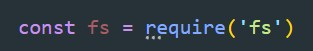
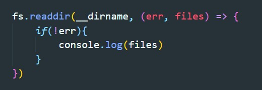
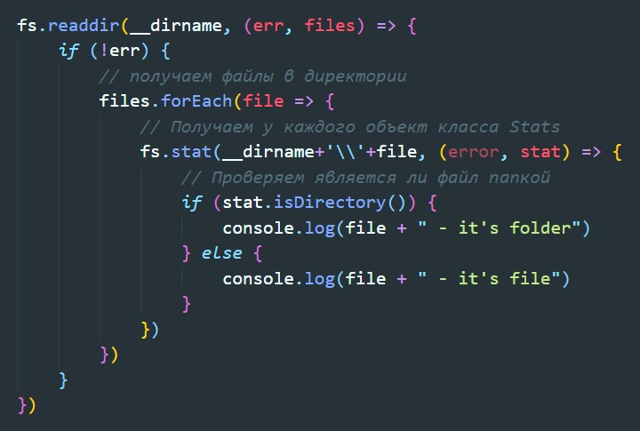
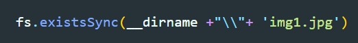
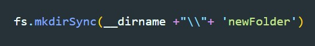
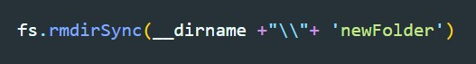
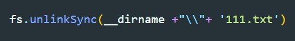

Модуль для работы с файловой стистемой - fs
Практически все методы модуля состоят в двух вариантах. Синхронный и ассинхронный. Второй имеет приставку к методу Sync, это означает что основной поток будет будет блокирован пока метод не будет завершен.
readdir - этот метод получает первым аргументом путь, а вторым колбэк. Этому колбеку будет передан первым аргументом ошибка (если такая случится), а вторым массив всех файлов находящихся в указанной директории
stat - этот метод так же принимает два аргумента: 1 - полный путь до файла 2 - callback. Callback в свою очередь получит ошибку (если такова случится) и объект класса Stats. У этого объекта есть два интересных метода, которые могу проверять является ли полученный файл папкой, или же это обычный файл.
existsSync - используется для синхронной проверки того, существует ли уже файл по указанному пути или нет. Возвращает логическое значение, указывающее на наличие файла.
mkdirSync - создает директорию
rmdirSync - удаляет директорию
unlinkSync - удаляет файл
